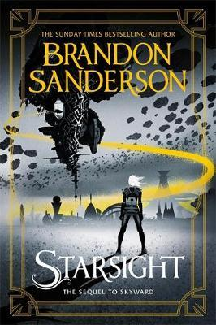

"Starsight"
- Read on 2019-12-10
- Rating: ️️️️️
- Format: 🎧 (14 hours 30 minutes)
I really like how well Brandon Sanderson builds upon familiar worlds in new ways. This book does exactly that - taking what you're familiar with from the first book, and easily taking it somewhere both unexpected, yet familiar. I don't know how well this book would stand if you hadn't read the first, but it reintroduces you to the overall story very well if it's been a while since reading the first. Additionally, I'm always glad to have a book I can easily give to my YA family members, and know they're in for a good book.
- Prior: The Three-Body Problem
- Next: A Wrinkle in Time
- Read on 2022-01-14
- Rating: ️️️️️
- Format: 🎧 (14 hours 30 minutes)
Second Review
This book felt like such a departure (literally) from the world the first book had built up. I remember being thrown for a loop the first time I read it, and that feeling still exists. Despite that departure, I still found myself enjoying this one, though not quite as much as the first.
- Read on 2024-04-25
- Rating: ️️️️️
- Format: 🎧 (14 hours 30 minutes)
Third Review
Brandon Sanderson has built a world in which it's easy to become immersed - even after years of separation from the world. Although aimed at a Young Adult audience, I surely enjoyed this book again. Like so many other books mid-series, I wouldn't start with this one - I'd just start at the prior book. I think my one contention with this book is that SO MUCH changes from the first book in the series to this one, which Sanderson may have felt necessary to keep the pace of the series he was hoping for.
- Prior: How to Talk to Anyone
- Next: Sunreach